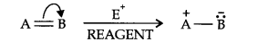
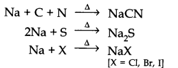
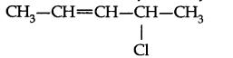
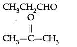
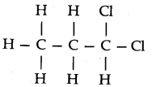
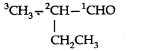

NCERT Solutions for Class 11th Chemistry Chapter 12 Organic Chemistry Some Basic Principles and Techniques
Topics and Subtopics in NCERT Solutions for Class 11 Chemistry Chapter 12 Organic Chemistry Some Basic Principles and Techniques:
| Section Name | Topic Name |
| 12 | Organic Chemistry – Some Basic Principles and Techniques |
| 12.1 | General Introduction |
| 12.2 | Tetravalence of Carbon: Shapes of Organic Compounds |
| 12.3 | Structural Representations of Organic Compounds |
| 12.4 | Classification of Organic Compounds |
| 12.5 | Nomenclature of Organic Compounds |
| 12.6 | Isomerism |
| 12.7 | Fundamental Concepts in Organic Reaction Mechanism |
| 12.8 | Methods of Purification of Organic Compounds |
| 12.9 | Qualitative Analysis of Organic Compounds |
| 12.10 | Quantitative Analysis |
NCERT Solutions Class 11 ChemistryChemistry Lab ManualChemistry Sample Papers
NCERT TEXTBOOK QUESTIONS SOLVED
Question 1. What are hybridisation states of each carbon atom in the following compounds? CH2=C=O, CH3CH=CH2, (CH3)2CO, CH2=CHCN, C6H6.
Answer:

Question 2. Indicate the a- and n-bonds in the following molecules:
C6H6 , C6H12, CH2Cl2, CH=C=CH2, CH3NO2, HCONHCH3
Answer:

More Resources for CBSE Class 11
- NCERT Solutions
- NCERT Solutions Class 11 Maths
- NCERT Solutions Class 11 Physics
- NCERT Solutions Class 11 Chemistry
- NCERT Solutions Class 11 Biology
- NCERT Solutions Class 11 Hindi
- NCERT Solutions Class 11 English
- NCERT Solutions Class 11 Business Studies
- NCERT Solutions Class 11 Accountancy
- NCERT Solutions Class 11 Psychology
- NCERT Solutions Class 11 Entrepreneurship
- NCERT Solutions Class 11 Indian Economic Development
- NCERT Solutions Class 11 Computer Science
Question 3. Write bond-line formulas for: Isopropyl alcohol, 2,3-Dimethylbutanal, Heptan-4-one.
Answer:

Question 4. Give the TUPAC names of the following compounds:

Answer: (a) Propylbenzene (b) 3-Methylpentanenitrite (c) 2, 5-Dimethylheptane
(d) 3-Bromo- 3-chloroheptane (e) 3-Chloropropanal (f) 2, 2-Dichloroethanol
Question 5.Which of the following represents the correct TUPAC name for the compounds concerned?
(a) 2, 2-Dimethylpentane or 2-Dimethylpentane (b) 2, 4, 7-Trimethyloctane or 2, 5, 7- Trimethyloctane (c) 2-Chloro-4-methylpentane or 4-Chloro-2-methylpentane (d) But-3-yn- l-ol or But-4-ol-yne.
Answer: (a) 2, 2-Demethylpentane (b)2, 4, 7-Trimethyloctane. For two alkyl groups on the same carbon its locant is repeated twice, 2, 4, 7-locant set is lower than 2, 5, 7.
(c) 2- Chloro-4-methylpentane. Alphabetical order of substituents, (d) But-3-yn-l-ol. Lower locant for the principal functional group, i.e., alcohol.
Question 6. Draw formulas for the first five members of each homologous series beginning with the following compounds,
(a) H—COOH (b) CH3COCH3 (c) H—CH=CH2
Answer: (a) CH3—COOH
CH3CH2—COOH CH3CH2CH2—COOH
CH3CH2CH2CH2—COOH
(b) CH3COCH3
CH3COCH2CH3
CH3COCH2CH2CH3
CH3COCH2CH2CH2CH3
CH3CO(CH3)4CH3
(c) H—CH=CH2
CH3CH=CH2
CH3CH2CH=CH2
CH3CH2CH2CH=CH2
CH3CH2CH2CH2CH=CH2
Question 7. Give condensed and bond line structural formulas and identify the functional group(s) present, if any, for: (a) 2, 2, 4-Trimethylpentane (b) 2-Hydroxy-l, 2, 3-propanetricarboxylic acid (c) Hexanedial.
Answer:

Question 8. Identify the functional groups in the following compounds:

Answer:

Question 9. Which of the two: O2NCH2CH2O– or CH3CH2O– is expected to be more stable and why?
Answer: O2N——<——- CH2——<——- CH2 —<——- O– is more stable than CH3——<——-CH2——<——-O- because NO2 group has -I-effect and hence it tends to disperse the -ve charge on the O-atom. In contrast, CH3CH2 has +I-effect. It, therefore, tends to intensify the -ve charge and hence destabilizes it.
Question 10. Explain why alkyl groups act as electron donors when attached to a π-system.
Answer: Due to hyperconjugation, alkyl groups act as electron donors when attached to a π- system as shown below:

Question 11. Draw the resonance structures for the following compounds. Show the electron shift using curved-arrow notation. (a) C6H5OH (b) C6H5N02 (c) CH3CH=CHCHO (d) C6H5—CHO (e) C6H5—CH2 (f) Ch3Ch=ChCh2
Answer:


Question 12. What are electrophiles and nucleophiles? Explain with examples:
Answer: Electrophiles: The name electrophiles means electron loving. Electrophiles are electron deficient. They may be positive ions or neutral molecules.
Ex: H+, Cl+, Br+, NO2+, R3C+, RN2+, AlCl3, BF3
Nucleophiles: The name nucleophiles means ‘nucleus loving’ and indicates that it attacks the region of low electron density (positive centres) in a substrate molecule. They are electron rich they may be negative ions or neutral molecules.
Ex: Cl– Br–, CN–, OH–, RCR2–, NH3, RNH2, H2O, ROH etc.
Question 13. Identify the reagents shown in bold in the following equations as nucleophiles or electrophiles
(a) CH3COOH + HO– ———–> CH3COO– + H2O
(b) CH3COCH3 + CN ———–> (CH3)2 C(CN)(OH)
(c) C6H5 + CH3CO ———–> C6H5COCH3
Answer: Nucleophiles: (a) and (b) and Electrophile : (c)
Question 14. Classify the following reactions in one of the reaction type studied in this unit.
(a) CH3CH2Br + HS– ———–> CH3CH2SH + Br–
(b) (CH3)2C=CH2 + HCl ———–> (CH3)2CCl—CH3
(c) CH3CH2Br + HO– ———–> CH2=CH2 + H2O + Br–
(d) (CH3)3C—CH2OH + HBr ———–> (CH3)2 C Br CH2CH2CH3 + H2O
Answer: (a) Nucleophilic substitution (b) Electrophilic addition
(c)Bimolecular elimination (d) Nucleophilic substitution with rearrangement.
Question 15. What is the relationship between the members of following pairs of structures? Are they structural or geometrical isomers or resonance contributors?

Answer: (a) Structural isomers (actually position isomers as well as metamers)
(b) geometrical isomers
(c) resonance contributors because they differ in the position of electrons but not atoms
Question 16. For the following bond cleavages, use curved-arrows to show the electron flow and classify each as homolysis or heterolysis. Identify reactive intermediate produced as free radical, carbocation and carbanion.

Answer:

Question 17. Explain the terms inductive and electromeric effects. Which electron displacement effect explain the following correct orders of acidity of the carboxylic acids?
(a) Cl3CCOOH > Cl2CHCOOH > ClCH2 COOH
(b) CH3CH2COOH > (CH3)2 CHCOOH > (CH3)3CCOOH
Answer: Inductive Effect: The inductive effect refers to the polarity produced in a molecule as a result of higher electronegativity of one atom compared to another.Atoms or groups which lose electron towards a carbon atom are said to have +1 Effect.
Those atoms or groups which draw electron away from a carbon atom are said to have -I Effect.
Commomexamples of -I effect are:
NO2, F, Cl, Br, I, OH etc.
Examples of +1 effect are (Electron releasing)
(CH3)2C— , (CH3)2CH—, CH3CH2— CH3— etc.
Electromeric effect: The electromeric effect refers to the polarity produced in a multiple bonded compound as it is approached by a reagent.

The atom A has lost its share in the electron pair and B has gained this share.
As a result A acquires a positive charge and B a negative charge. It is a temporary effect and takes place only in the presence of a reagent.
(a) -I-effect as shown below:
As the number of halogen atoms decreases, the overall -I- effect decreases and the acid strength decreases accordingly.

(b) +I-effect as shown below:
As the number of alkyl groups increases, the +I-effect increases and the acid strength
decreases accordingly.

Question 18. Give a brief description of the principles of the following techniques taking an example in each case: (a) Crystallisation (b) Distillation (c) Chromatography
Answer: (a) Crystallisation: In this process the impure solid is dissolved in the minimum volume of a suitable solvent. The soluble impurities pass into the solution while the insoluble ones left behind. The hot solution is then filtered and allowed to cool undisturbed till crystallisation is complete. The crystals are then separated from the mother liquor by filtraration and dried.
Example: crystallisation of sugar.
(b) Distillation: The operation of distillation is employed for the purification of liquids from non-volatile impurities. The impure liquid is boiled in a flask and the vapours so formed are collected and condensed to give back pure liquid in another vessel. Simple organic liquids such as benzene toluene, xylene etc. can be purified.
(c) Chromatography: Chromatography is based on the principle of selective distribution of the components of a mixture between two phases, a stationary phase and a moving phase. The stationary phase can be a solid or liquid, while the moving phase is a liquid or a gas. When the stationary phase is solid the basis is adsorption and when it is a liquid the basis is partition. Chromatography is generally used for the Reparation of coloured substances such as plant pigments or dyestuffs.
Question 19. Describe the method, which can be used to separate two compounds with different solubilities in a solvent S.
Answer: Fractional crystallisation is used for this purpose. A hot saturated solution of these two compounds is allowed to cool, the less soluble compound crystallises out while the more soluble remains in the solution. The crystals are separated from the mother liquor and the mother liquor is again concentrated and the hot solution again allowed to cool when the crystals of the second compound are obtained. These are again filtered and dried.
Question 20. What is the difference between distillation, distillation under reduced pressure and steam distillation?
Answer: Distillation is used in case of volatile liquid mixed with non-volatile impurities.
Distillation under reduced pressure: This method is used to purify such liquids which have very high boiling points and which decompose at or below their boiling points.
Steam distillation is used to purify steam volatile liquids associated with water immiscible impuritites.
Question 21. Discuss the chemistry of Lassaigne’s test.
Answer: Lassaigne’s test: Nitrogen, sulphur, halogens and phosphorous present in an organic compound are detected by Lassaigne’s test.
First of all compounds are converted to ionic form by fusing the compound with sodium metal.

Cyanide, sulphide or halide of sodium are extracted from the fused mass by boiling it with distilled water. This extract is known as sodium fusion extract.
Question 22. Differentiate between the principle of estimation of nitrogen in an organic compound by (i) Dumas method (ii) Kjeldahl’s method.
Answer: (i) Dumas method: The organic compound is heated strongly with excess of CuO ‘ (Cupric Oxide) in an atmosphere of CO2 when free nitrogen, CO2 and H2O are obtained.
(ii)Kjeldahl’s method: A known mass of the organic compound is heated strongly with cone. H2SO4, a little potassium sulphate and a little mercury (a catalyst). As a result of reaction the nitrogen present in the organic compound is converted to ammonium sulphate.
Question 23. Discuss the principle of estimation of halogens, sulphur and phosphorus present in an organic compound.
Answer: Estimation of halogens: It involves oxidising the organic substance with fuming nitric acid in the presence of silver nitrate. The halogen of the substance is thus converted to silver halide which is separated and weighed:
1Weight of organic compound = W gm
weight of silver halide = x g.

Estimation of sulphur: The organic substance is heated with fuming nitric acid but no silver nitrate is added. The sulphur of the substance is oxidised to sulphuric acid which is then precipitated as barium sulphate by adding excess of barium chloride solution. From the weight of BaSO4 so obtained the percentage of sulphur can be calculated.

Estimation of phosphorous: The organic substance is heated with fuming nitric acid whereupon phosphorous is oxidised to phosphoric acid. The phosphoric acid is precipitated as ammonium phosphomolybdate, (NH4)3 PO4 .12MOO3, by the addition of ammonia and ammonium molybdate solution which is then separated, dried and weighed.

Question 24. Explain the principle of paper chromatography.
Answer: This is the simplest form of chromatography. Here a strip of paper acts as an adsorbent. It is based on the principle which is partly adsorption. The paper is made of cellulose fibres with molecules of water adsorbed on them. This acts as stationary phase. The mobile phase is the mixture of the components to be identified prepared in a suitable solvent.
Question 25. Why is nitric acid added to sodium extract before adding silver nitrate for testing halogens ?
Answer: Nitric acid is added to sodium extract so as to decompose
NaCN + HNO3 ——-> NaNO3 + HCN
Na2S + 2HNO3 ——> 2NaNO3 + H2S
Question 26. Explain the reason for the fusion of an organic compound with metallic sodium for testing nitrogen, sulphur and halogens.
Answer: Organic compound is fused with sodium metal so as to convert organic compounds into NaCN, Na2S, NaX and Na3PO4. Since these are ionic compounds and become more reactive and thus can be easily tested by suitable reagents.
Question 27. Name a suitable technique of separation of the components from a mixture of calcium sulphate and camphor.
Answer: Sublimation.Because camphor can sublime whereas CaSO4 does not.
Question 28. Explain, why an organic liquid vaporises at a temperature below its boiling point in its steam distillation ?
Answer: It is because in steam distillation the sum of vapour pressure of organic compound and steam should be equal to atmospheric pressure.
Question 29.Will CCl4 give white precipitate of AgCl on heating it with silver nitrate? Give reason for your answer.
Answer: No. CCl4 is a completely non-polar covalent compound whereas AgNO3 is ionic in nature. Therefore they are not expected to react and thus a white ppt. of silver chloride will not be formed.
Question 30. Why is a solution of potassium hydroxide used to absorb carbon dioxide evolved during the estimation of carbon present in an organic compound?
Answer: CO2 is acidic in nature and therefore, it reacts with the strong base KOH to form K2CO3.
2KOH + CO2 ——–> K2CO3+ H2O.
Question 31. Why is it necessary to use acetic acid and not sulphric acid for acidification of sodium extract for testing sulphur by lead acetate test?
Answer: For testing sulphur sodium extract is acidified with acetic acid because lead acetate is soluble and does not interfere with the test.

Question 32. An organic compound contains 69% carbon and 4.8% hydrogen, the remainder being oxygen. Calculate the masses of carbon dioxide and water produced when 0.20 g of this compound is subjected to complete combustion.
Answer:

Question 33. 0.50 g of an organic compound was Kjeldahlished. The ammonia evolved was passed in 50 cm3 of IN H2SO4. The residual acid required 60 cm3 of N/2 NaOH solution. Calculate the percentage of nitrogen in the compound.
Answer:

Question 34. 0.3780 g of an organic compound gave 0.5740 g of silver chloride in Carius estimation. Calculate the percentage of chlorine in the compound.
Answer: Mass of the compound = 0.3780 g
Mass of silver chloride = 0.5740 g

Question 35. In an estimation of sulphur by Carius method, 0.468 of an organic sulphur compound gave 0.668 g of barium sulphate. Find the percentage of sulphur in the compound.
Answer: Mass of the compound = 0.468 g
Mass of barium sulphate= 0.668 g

Question 36.

Answer:

Question 37. In Lassaigne’s test for ntrogen in an organic compound, the Prussian blue colour is obtaine d due to the formation of:
(a) Na4[Fe(CN)6] (b)Fe4[Fe(CN)6]3
(c) Fe2[Fe(CN)6] (d)Fe3[Fe(CN)6]4 .
Answer: (b) is the correct answer.
Question 38. Which of the following carbocation is most stable?

Answer: (b) is the most stable since it is a tertiary carbocation.
Question 39. The best and latest technique for isolation, purification and separation of organic compounds is: (a) Crystallisation (b) Distillation
(c) Sublimation (d) Chromatography.
Answer: (d) is the correct answer.
Question 40. The following reaction is classified as:
CH3CH2I + KOH (aq) ———-> CH3CH2OH + KI
(a) electrophilic substitution (b) nucleophilic substitution
(c) elimination (d) addition
Answer: (b) It is a nucleophilic substitution reaction. KOH (aq) provides OH- ion for the nucleophile attack.
MORE QUESTIONS SOLVED
I. Very Short Answer Type Questions
Question 1. How will you separate a mixture of two organic compounds which have different solubilities in the same solvent?
Answer: By fractional crystallisation.
Question 2. An organic liquid decomposes below its boiling point. How will you purify it?
Answer: By distillation under reduced pressure.
Question 3. Suggest a suitable technique for separating naphthalene from kerosene oil present in a mixture.
Answer: Simple distillation.
Question 4. Arrange the following in increasing order of C—C bond length: C2H & C2H4, C2H2.
Answer: C2H2 (120 pm) < C2H4 (134 pm) < C2H6 (154 pm)
Question 5. Name the process used to separate sugar and salt.
Answer: Fractional crystallisation using ethanol as a solvent.
Question 6. Which gas is liberated in Kjeldhal’s method?
Answer: Ammonia gas (NH3)
Question 7. What is Lassaigne’s extract?
Answer: When organic compound is fused with sodium metal and then extracted by water, it is called Lassaigne’s extract.
Question 8. What type of solids are separated by fractional crystallisation?
Answer: Those solids which are soluble in the same splvent but to a different extent i.e., differ in their solubility.
Question 9. Name a suitable adsorbent used in the process of column chromatography.
Answer: Al2O3 (alumina)
Question 10. Name three types of chromatography.
Answer: Column chromatography, paper chromatography and thin layer chromatography.
Question 11. Which method is used to extract a compound in aqueous solution?
Answer: Differential extraction.
Question 12. In Carius method, sulphur is estimated by precipitating it as which compound?
Answer: BaSO4.
Question 13. Which elements are estimated by Liebig’s Method?
Answer: Carbon and hydrogen.
Question 14. Which type of compounds are purified by steam distillation?
Answer: Steam volatile and insoluble in water.
Question 15. Complete the following:(CH3COO)2 Pb + Na2S ———->
Answer: (CH3COO)2 Pb + Na2S ———->PbS + 2CH3COONa
Question 16. How will you separate a mixture of Iodine and sodium chloride!
Answer: Sublimation.
Question 17. Why is an organic compound fused with sodium in Lassaigne’s test?
Answer: It is because sodium is highly reactive and it reacts with elements to form ionic compounds.
Question 18. Write the name of element which is confirmed on adding Na2[Fe(CN)5NO] in sodium extract solution due to appearance of violet colouration.
Answer: Sulphur.
Question 19. Write the structural formula of 4-chloro-2-pentene.
Answer:

Question 20. What is the basic principle of chromatography?
Answer: Chromatography is based on the principle of differential adsorption.
II. Short Answer Type Questions
Question 1. Write all structural isomers of molecular formula C3H6O.
Answer:

Question 2. (a) What do you understand by Homolytic fission?
(b) What are carbanions? Give an example.
Answer: (a) Homolytic fission is breaking of a bond in such a manner that each atom takes one electron each to form free radicals.
A——-B ———-> A + B
(b) Organic ions which contain a negatively charged carbon atom are called carbanions. e.g., CH3–is carbanion.
Question 3. How will you detect the presence of nitrogen and sulphur in Lassaigne’s extract?
Answer: If freshly prepared FeSO4 and then dil. H2SO4 is added to Lassaigne’s extract, a blue green colouration confirms the nitrogen.
Question 4. Give equation for the following:
(i) Electrophilic Substitution
(ii) Nucleophilic Substitution
Answer:

Question 5. What are electrophiles? Explain electrophile substitution reaction with the help of example.
Answer: A reagent which can accept an electron pair in a reaction is called an electrophile.

Question 6. 0.25 g of an organic compound gave 38 cm3 of N2 at 300 K and 96 k Pa pressure. Calculate % of N in the sample.
Answer:

Question 7. 0.15 g of an organic compound gave 0.12 g of Ag Br by the Carius method. Find percentage of Br in the compound.
Answer:

Question 8. 0 .12 g of an organic compound containing phosphorous gave 0.22 g of Mg2 P2O7 by usual analysis. Calculate the percentage of phosphorous in the compound.
Answer:

Question 9. (a) Which is more suitable method for the purification of a compound in liquid state which decomposes at or below its boiling point?
(b) How will you separate a mixture of ammonium chloride and common salt?
Answer: (a) Distillation under reduced pressure or vacuum distillation (b) Sublimation.
Question 10.

Answer:

III. Long Answer Type Questions (5 Marks)
Question 1. Explain hyperconjugation effect. How does hyperconjugation effect explain the stability ofalkenes ?
Answer: Hyperconjugation: The relative stability of various classes of carbonium ions may be explained by the number of no-bond resonance structures that can be written for them. Such structures are arrived by shifting the bonding electrons from an adjacent C—H bond to the electron-deficient carbon. In this way, the positive charge originally on carbon is dispersed to the hydrogen. This manner of electron release by assuming no-bond character in the adjacent C—H bond is called Hyperconjugation or No-Bond Resonance. The greater the hyperconjugation, the greater will be the stability of the compound. The increasing order of stability can be shown as.

Question 2. (a) What is the basic principle involved in the estimation of nitrogen by Dumas method.
(b) In a Dumas nitrogen estimation method, 0.30 g of an organic compound gave 50 cm3 of N2 collected at 300 K and 715 mm Hg pressure. Calculate the percentage composition of nitrogen in the compound. (Vapour pressure of water at 300 K is 15 mm Hg)
Answer: (a) This method is based upon the fact that nitrogenous compound is heated with
copper oxide in an atmosphere of carbon dioxide yield free nitrogen.

Question 3. (a) What is Lassaigne’s extract? Will NaCN give a positive Lassaigne’s test for nitrogen?
(b) Which colour will appear in the Lassaigne’s test if the compound contains both nitrogen and sulphur.
(c) Why is Lassaigne’s extract prepared in distilled water? Can we detect oxygen in a compound by Lassaigne’s test?
Answer: (a) When organic compound is fused with sodium metal and then extracted by water, it is called Lassaigne’s extract. Yes.
(b) Blood red colour.
(c) Lassaigne’s extract is prepared in distilled water since tap water contains CL ions. No, oxygen cannot be detected by Lassaigne’s test.
IV. Multiple Choice Questions
Question 1. The large number of organic compounds is due to
(a) the valency of carbon (b) a small size of carbon
(c) a special property of carbon known as catenation
Question 2. The IUPAC name of

(a) 1, 2-dichloropropane (b) 3, 3-dichloropropane
(c) 1, 1-dichloropropane (d) dichloropropane
Question 3. The IUPAC name of

(a) 2-methyl butanal (b) butan-2-aldehyde
(c) 2-ethylpropanal (d) 3-methyl isobutraldehyde
Question 4. The bond that undergoes heterolytic cleavage most readily is
(a) C-C (b) C-O (c) C-H (d) O-H
Question 5. The reaction

(a)carbocation formation (b) free-radical mechanism
(c) carbanion formation (d) none of these
Question 6. The hybridization state of a carbocation is
(a) sp4 (b) sp3 (c) sp2 (d) sp
Question 7. Which of the following are electrophiles?
(a) Dimethyl sulphide (b) Bromides (c) Carbon dioxide (d) Ammonia
Question 8. Which of the following compounds will exhibit cis-trans isomerism?
(a) 2-Butene (b) 2-Butyne (c) 1-Butene (d) 2-Butanol
Question 9.

The IUPAC name of this compound is
(a) 3-ethyl-4-chloro-l, 4-pentadiene
(c) 4-chloro ethyl-l-pentene
Ans.1. (c) 2. (c) 3. (c) 4. (d) 5. (b)
6. (c) 7. (a) and (c) 8. (a) 9. (b)
V. HOTS Questions
Question 1. Write the hybridized state of C atoms in the following CH2 = CH – C-N
Answer:
Question 2. Explain why (CH3)3C+ is more stable than CH3C+H2.
Answer: (CH3)3C+ has nine alpha hydrogens and has nine hyperconjugation structures while CH3C+H2 has three alpha hydrogens and has three hyperconjugation structures, therefore(CH3)3C+ is more stable than CH3C+H2.
Question 3. Why is an organic compound fused with Sodium for testing nitrogen, halogens and sulphur?
Answer: On fusing with sodium metal the elements present in an organic compound are converted into sodium salts which are water soluble which can be filtered and detected by the respective tests.
Question 4. Under what conditions can the process of steam distillation is used?
Answer: Steam distillation is used to purify the liquids which are steam volatile and not miscible with water!
Question 5. Explain hyperconjugation effect. How does hyperconjugation effect explain the stability ofalkenes?
Answer: The relative stability of various classes of carbonium ions may be explained by the number of no-bond resonance structures that can be written for them. Such structures are obtained by shifting the bonding electrons from an adjacent C-H bond to the electron deficient carbon so the positive charge originally on carbon is dispersed to the hydrogen. This manner of electron release by assuming no bond character in the adjacent C-H bond is called Hyperconjugation. Greater the hyperconjugation, greater will be the stability of alkenes.